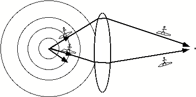
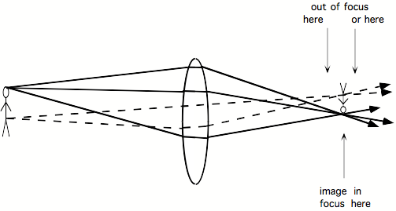
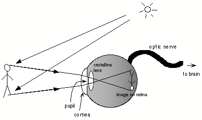

Light is a truly wonderful thing, and the search to understand its nature led, at the beginning of the twentieth century, to two of the most profound revolutions that ever took place in the history of modern science: the quantum theory and the theory of relativity. These theories helped us understand two things: that light can be considered both as having a wave nature, and a corpuscular nature -- and that light is not just the vehicle of our sense of sight, but that it plays a fundamental role in the universe by having a finite propagation velocity and thereby limiting the speed with which all communication can occur.
As concerns vision, what we know now is that light is a form of electromagnetic energy, just like the radio waves received by our radios and TV sets, like the microwaves in a microwave oven, and like X-rays, gamma rays and cosmic rays coming from outer space. What distinguishes light from these other forms of electromagnetic energy is simply that we can see it! Whereas electromagnetic waves can have wavelengths ranging from hundred millionths of a millimeter (cosmic rays) to kilometers (long radio waves), the wavelengths which our eyes are sensitive to are in the very restricted range between about 0.0004 mm, which we see as red, and about 0.0008 mm, corresponding to violet light. In fact it is rather surprising that though infrared light is only a little bit longer in wavelength than red light, we have no visual sensation of it at all: on the contrary, as we increase the wavelength of light beyond red, the qualitative sensation of red changes abruptly: we suddenly go from seeing it with our eyes, to feeling it as heat on our skins.... Similarly, we have no visual sensation of ultraviolet light, which is only slightly shorter in wavelength than violet light. The ultraviolet 'black' neon lights used for effect in some nightclubs make white clothes and specks of dust glow brightly, and make your teeth and the whites of your eyes seem yellow instead of white. The reason for this is that some substances, like certain detergents, absorb (invisible) ultraviolet light and re-emit it as visible light, a phenomenon called fluorescence, used to make what are called fluorescent colors or paints. Ultraviolet light also makes the media within the eye fluoresce, causing a kind of fog to bathe your whole visual field when you look directly at such lights.
Some animal species are able to see wavelengths of electromagnetic radiation that humans cannot see: For example, many insects and birds have eyes that are sensitive to ultraviolet light. Because ultraviolet light penetrates through clouds, these animals can see the sun even on overcast days, and can use its position to help them navigate. Being able to see in the ultraviolet may also help some animals to identify the foods they favor. For example, bees may perceive two apparently identical yellow flowers to be of quite different colors, or to carry distinctive ultraviolet markings that are invisible to humans. Another example is the case of birds: I have always been surprised watching pigeons picking up seeds on the ground: they seem never to confuse them with bits of paper, cigarette ends and small stones which to me look almost identical. I wonder if the pigeons' sensitivity to ultraviolet light gives them an advantage in detecting edible morsels[1]. .
Just as some species have sensitivity in the ultraviolet range, other species may be sensitive in the infrared. Since infrared is emitted by warm bodies, certain predators like owls or snakes have vision in the infrared that enables them to locate interesting warm bodies like mice. The "night vision" glasses used by the military also rely on infrared light, but are generally used to locate tanks rather than mice. Perhaps bio-engineers will be able, in the future, to genetically engineer soldiers' retinas to be sensitive in the infrared, so that they can see in the dark. It may actually be the case that some humans have existed who, through genetic diversity, naturally possessed sensitivity in the infrared: according to Pliny the Elder, the roman emperor Tiberius Caesar could see perfectly at night[2]..
Just like the other types of electromagnetic radiation, light permeates the universe. It gets emitted by hot objects like stars and lightbulbs, and bounces around, sometimes getting absorbed, sometimes getting reflected off smooth, shiny objects like mirrors, or getting scattered by rougher objects. We know that light waves are somewhat like the ripples on the surface of a pond: they spread out in concentric circles from each point where they are emitted. They cross over each other without interacting. At any point in space, like a point on the surface of the pond, wavelets of light are coming in from all directions in a grand buzzing confusion. What is rather interesting is that our eyes are able, by capturing the minute quantity of light coming in their direction, to deduce what the shapes of the surrounding objects are. This is a rather surprising fact. It seems amazing to think that the oscillations in one small region of the pond should allow one to deduce the shape of the objects disturbing the surface of the pond at a distant location! After all, the smell given off by a flower, the sound given off by a dog, are nothing to do with their shape. What is special about light that allows it to transmit the shape of the object that it is coming from? This was the main problem about light that baffled scientists over the centuries.
We know now that the answer to this question is connected with the wave nature of light, and with the very important notion of image. Forms of energy that have a wave nature, like light and sound, also allow images of distant objects to be created. The objects that can be imaged must be many times larger than the wavelength of the waves being used. For example, radio telescopes make images of galaxies using radio waves. Electron microscopes use electrons, which can be considered to be made up of minute waves, to make images of molecules. It would probably be possible to use the wavelets on the surface of a pond to make images of very large objects that perturb the pond's surface, but waves on ponds dissipate more rapidly than light waves, and winds perturb the pond's surface. Sound waves can also be used to make images, but only of objects much larger than the wavelength of sound being used. Thus, ultrasound, which has wavelengths going down to fractions of a millimeter, can be focussed and used in medecine and biology to look at cells or even molecules. Sound waves that we can hear have much longer wavelength, in the centimeter and meter range. A lens to focus such waves into an image would have to be many times larger than this. Thus many applications using audible or near-audible sound, such as echolocation, used by bats to navigate, are based more on the principle of measuring the time for an echo, and do not create a true "image" from the sound waves.
Given energy in the form of a wave, there are at least two ways of making an image: one is holography, and one is the use of that miraculous invention, the lens... The most familiar lenses are the ones we use in spectacles and magnifying glasses, but other forms of lenses exist: in particular, a curved surface between two transparent substances can serve as a lens. What is so wonderful about lenses is the feature that allows them to form images: they have a very special way of modifying the direction in which light travels. The particular modification has the consequence that all the waves impinging on a lens that happen to have issued forth from a single point at a particular distance in front of the lens, are brought together to a corresponding single point at a particular distance on the other side of the lens (the lens has to be large in comparison to the wavelength of light in order to form such an image). Suppose that light waves from a light source fall on the surface of an object. Each point of the object re-emits some of the light, thereby becoming a minute secondary light source, sending its waves out in all directions like a tiny sun. The particular selection of wavelengths contained in the re-emitted light determines the perceived color of that speck of the object.

Showing how light
from a point on the left side of the lens spreads out and is focussed by a lens
to come back together at a point on the right hand side of the lens
The diagram shows the light waves leaving that tiny speck of the object. If we conceive of ourselves as imaginary light-surfers, sitting on the crest of one of the emitted waves, wafting outwards from the speck on the object, then we will travel in a straight line in a certain direction away from the speck. Each of the possible straight lines leading away from the point in different directions is called a ray. What is interesting about lenses is that if another light-surfer starts out from the same speck but chooses to leave in a different direction from me, along a different ray from mine, though his ray at first diverges from mine,.the lens will bend it so it will meet mine again at a precise point behind the lens.

Showing how light leaving any point on the man on the left of the lens is collected into corresponding, distinct points on the upside down image situated at a particular distance on the right hand side of the lens.. Only if a piece of paper is put at the correct distance from the lens, will the image be in focus.
Furthermore, and this is what underlies the formation of images, all the rays coming from nearby specks of light on the object will also come together at nearby points, so that on the other side of the lens a kind of two-dimensional replica of the object is formed. This image only exists at one particular plane behind the lens, since nearer or further from the lens the rays have not yet converged, or are already on their way apart again. Furthermore, the image is generally invisible. In order to see it, it is necessary to interrupt the passing light by use of a surface like a piece of paper. If the paper is exactly at the right distance from the lens, then a series of specks of light will appear on the paper, each one corresponding to a different speck of the object: the image will be in focus. If we move the piece of paper closer or further from the lens, the image will go out of focus, since each speck of the object is now being projected as a little disc of light instead of a point, and the discs overlap, giving rise to blur.
It is worth pointing out two somewhat unintuitive things about seeing light. First, you never actually see rays of light. Sometimes it seems like you see rays, as those that the sun makes as it shines through clouds, or as the path of a spotlight in a smoky theatre; however in fact what you are seeing is not the ray of light, but the light which is being scattered back towards you by the small dust (or water) particles lying along the ray. In a vacuum you could be standing right next to a passing ray of light and not see it...
The second unintuitive thing about seeing light is that, although lenses form images, and although these are formed at a certain distance behind the lens, you cannot actually see the image in the way you might imagine. Giovanni Battista della Porta (1535-1615), whom we shall meet again on the subject of the 'camera obscura', claimed in his almanac of "Natural Magic" that he could show how to "make crystal balls such that they create images suspended in mid air behind them"[3]. But as rightly explained by Kepler, you have to place your eye along the axis of a lens and focus it in the appropriate way in order to see an image. When you do this, you do not have the impression that the image is a kind of ghostly apparition floating in space behind the lens. On the other hand, what is possible is to detect the presence of the image behind the lens by putting a piece of paper where the image is. Now the image forms on the particles of the paper and scatters light towards your eyes, and you can see that it is there. In other words, even if, like the ancients, you use lenses for making fire or for magnification, you will never actually see an image floating in space behind a lens. This may be another reason why, though lenses have existed since antiquity, the notion of "image" as we understand it today, did not appear until Kepler. Parenthetically is it worth noting that Kepler himself did not entirely escape from the fallacy of the floating image. Though he derides della Porta, he himself recounts how in a certain theatre in Dresden, where optical effects were being presented with the aid of a large convex lens, he was able, by chance, to actually see an image floating in the air. He does however admit that other people did not see it, and that it disappeared after he looked at it several times. On the other hand, holography is a technique whereby it is easier to create the impression of a floating image, but in fact the image that is formed, being three-dimensional, should perhaps not be called an image at all, as it is of quite a different nature than the two-dimensional image formed by a lens
The eye makes use of principles similar to those that operate with lenses to focus light from objects in front of us into an image on the inside back surface of the eyeball. The main focussing is done not by a normal shaped lens, but by the transparent bulging front surface of the eye, called the cornea. In order to ensure a high quality image within the eye, the surface of the cornea must be perfectly smooth and nearly spherical. For this reason the cornea (meaning "horn-like" in latin) is made of a hard, resilient substance similar in composition to fingernails. This is quite surprising to many people, who imagine that their eyes are soft and delicate! Perhaps the explanation for this misconception lies in the fact that in order to protect the cornea from damage, the proportion of pain receptors it contains is larger than in other body parts, making it exquisitely sensitive to pain. In fish, on the other hand, the cornea is actually soft and flexible. This is because under water the cornea itself cannot serve as a focussing device, since its density is similar to that of water and light rays hardly bend at all when they cross into it. All focussing in fish must therefore be done by the lens inside the eye, and this lens must be consequently much more powerful than in land animals, and so is almost spherical in shape.
Behind the cornea is the pupil, so called because of the tiny reflections that can often be seen in it, and which resemble little dolls, or 'pupilla' in latin. One might ask why the pupil looks black: it is in fact just a hole, and you might expect that in bright light you would be able to see through the hole into the inside of someone's eyes. In a later chapter I shall explain why this is not so, and why the pupil must generally appear totally black.
The pupil is surrounded by the colored iris, whose sphincter muscle can widen or constrict the pupil in order to adjust the amount of light that enters the eye. Apart from allowing the eye to adapt to ambient lighting, the size of the pupil also affects focus: as is also the case for normal cameras, depth of focus is greater with a small pupil, that is, focussing is less critical. On the other hand more light is required. The size of the pupil is also related to emotional and cognitive factors, and becomes larger when you are interested or concentrating on something[4]. Older people tend to have small pupils, not because they are more blasé, but because they have more difficulty focussing, as I shall explain now.
Behind the pupil is the crystalline lens. This firm, but elastic entity resembles a large transparent lentil. The function of the lens is to add a small, but variable amount of extra focussing power to the eye, over and above what is providedby the cornea, so that the eye can adapt its focus to different viewing distances. This modification, which is called accomodation, is done by the ciliary muscle inside the eye, which by squishing or unsquishing the lens, changes its power. The muscle works in the opposite way from what one might expect: Increasing the tension of the muscle allows the lens to spring into its natural fairly plump shape, putting nearby things into clear focus. Releasing the muscle causes the lens to be more stretched and flattened, so that now far-away things are in focus. This means that it is an effort to see things that are close, not the other way around. As people get older the lens hardens, the shape changes become difficult to make, and people can only focus on things that are beyond a certain distance (where they unfortunately tend to be too small!). Suddenly, one day when you are around the age of 40 or 50, you're trying to read a map in the dim light of your car, and you realize that you can't do it. This condition is called presbyopia, another one of the inevitable consequences of aging. It is rather curious that people have the impression that presbyopia sets in quite suddenly, when in fact it can be shown that the range of accomodation of the human lens actually diminishes perfectly steadily and gradually from the very moment of birth onwards![5] The explanation is presumably that we can adapt gradually by decreasing pupil size and increasing effort of accomodation, but that ultimately a moment comes when this adaptation becomes inefficacious.

The principle of operation of the eye. (A more detailed anatomical diagram of the eye can be found in Experimental Interlude 1.). Light reflected off an object (the man) is foucussed by the cornea, passes through the pupil, is focussed a little more by the cristalline lens, and forms an image on the retina, situated on the inside back surface of the eyeball. The retina contains light-sensitive photoreceptors that analyse the image and send it along the optic nerve to the brain.
Once the image of outside objects has been focussed on the retina at the back of the eyeball, it is analysed by a dense net of about 30 million miniscule light-sensitive cells called photoreceptors, forming the retina. The information from these photoreceptors is grouped together into a cable called the optic nerve, containing about one million nerve fibres, and carried out of the eyeball into the brain. This of course is where we consider the interesting part of vision to occur today, since once the visual information penetrates into the brain, it has come out of the domain of optics, which is well understood, and into the domain of cognitive science, which is not. But in the Middle Ages, optics was not yet understood, and the function of the eye itself was still a mystery.
What is the difference between the eye and a camera? As concerns their principle of operation, not very much. Both eye and camera use an optical system to focus an image at the back of a dark chamber. Both eye and camera have a variable aperture (the pupil in the eye, the diaphragm in the camera). In the case of the camera, the image is recorded on a film instead of on the retina. The camera uses a different means of focussing: the lens moves in and out instead of being squished or unsquished. In fishes however, focussing is achieved in a way similar to a camera, by displacing the lens. These are not very important differences. However, there is one striking difference between eye and camera: the optics of the eye is incomparably poorer than even the most primitive camera: in particular, the quality of the image formed by the eye is very bad off the central axis. If a camera were fitted with the optics of the human eye instead of its normal lens, the resulting pictures would only be in focus in a small central region, and would get more and more blurry towards the edge of the photgraph. A further, important difference between eye and camera (and vision scientists often are not aware of this) is the fact that the eye suffers from extreme chromatic aberrations. What this means is that the eye cannot simultaneously focus, say, a red and blue point of light. If the red point is in focus, the blue point will be out of focus[6]. The degree of defocus is qute considerable, more than an optician would let you out of his office with, and it is surprising that we do not notice it. A camera using the eye as optics would not be able to take color pictures at all: they would be completely blurry. It is curious that we don't notice these imperfections. I will come back to this issue in a later chapter.
[1]It could also be that pigeons' superior pecking ability is related to the number of 'color mechanisms' they possess. Thus, the eyes of humans differentiate colors by filtering light energy into three energy bands, corresponding approximately to bluish, greenish and reddish light. The fact that only three bands are used explains why only three colors are needed to render color photographs, and why, if you spit very lightly at a television screen, the tiny lenses formed by the droplets of spit allow you to see that amongst the innumerable tiny pixels that make up the screen, there are only three different colors. But to make a TV set for a pigeon, and many other bird species, five phosphors would have to be used, because pigeons use five, rather than three color mechanisms, filtering infoming light into five energy bands. This gives them finer color discrimination ability
[2]cf Lindberg, p. 78.
[3]Book 17, Ch. 13, cited by Kepler in Paralipomenes Ch. V prop V. .
[4]It has been claimed that pupil size is related to short term memory load.
[5]Perhaps this supposed gradual evolution could be an artefact of averaging over many people
[6]This difference in longitudinal chromatic aberrations amounts to almost 2 dioptires (cf. Legrand)